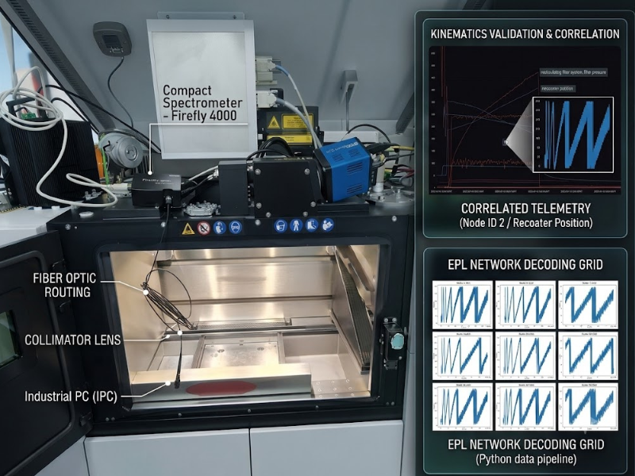

Industrial & Research Projects

Advanced Motion & Vision Control Integration
2026Took ownership of a workstream to engineer a >250kg test infrastructure, initiating actionable plans to drive real change in overseas fabrication.
Workstream Management
SolidWorks

End-to-End IIoT Integration for LPBF 3D Printing
2023Architected IIoT telemetry pipelines, analyzing data from sensitive DAQ hardware to generate fresh insights and capture real-time process parameters.
Data Analytics
InfluxDB
NI DAQ

In-Situ Spectrometer Integration & Validation
2023Executed critical EVT by analyzing data from IPC network packets, delivering breakthrough solutions to precisely synchronize optical sensors.
Python
Problem Solving
EPL